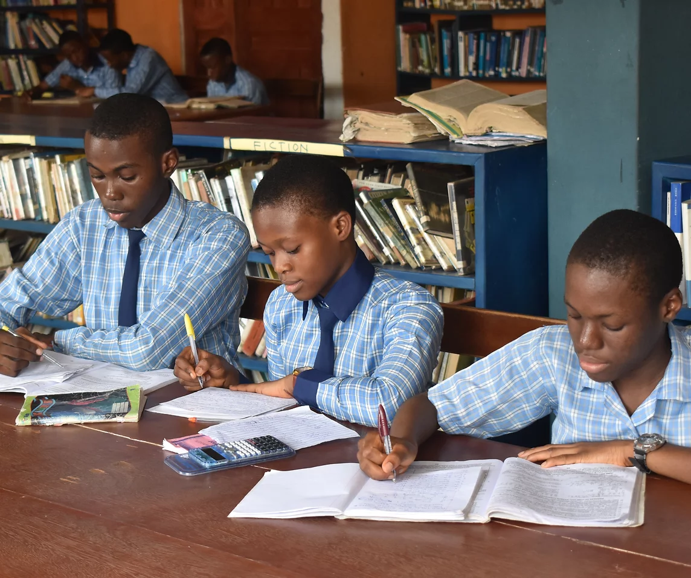
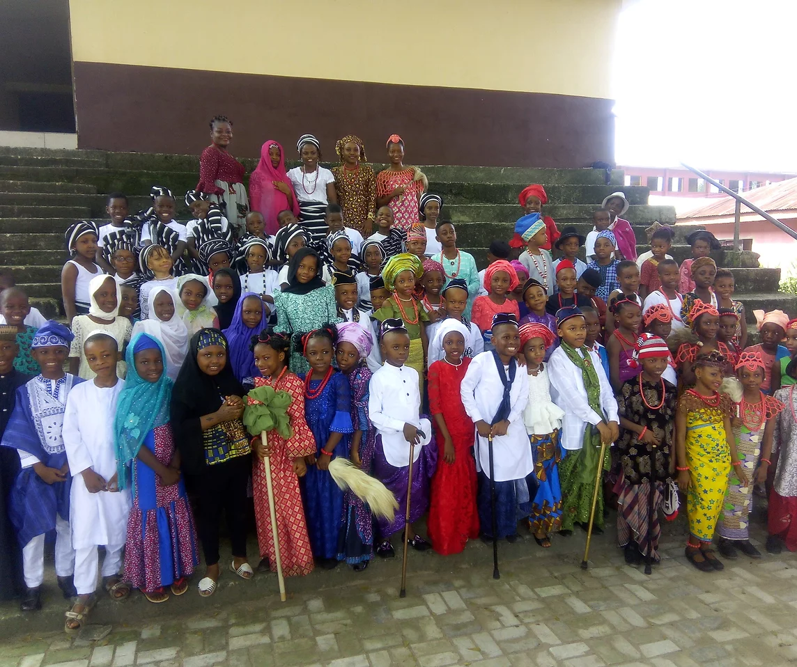
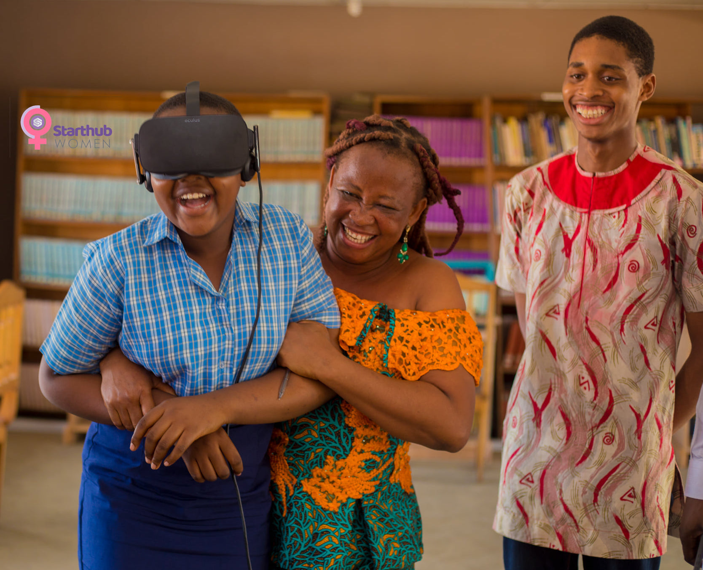
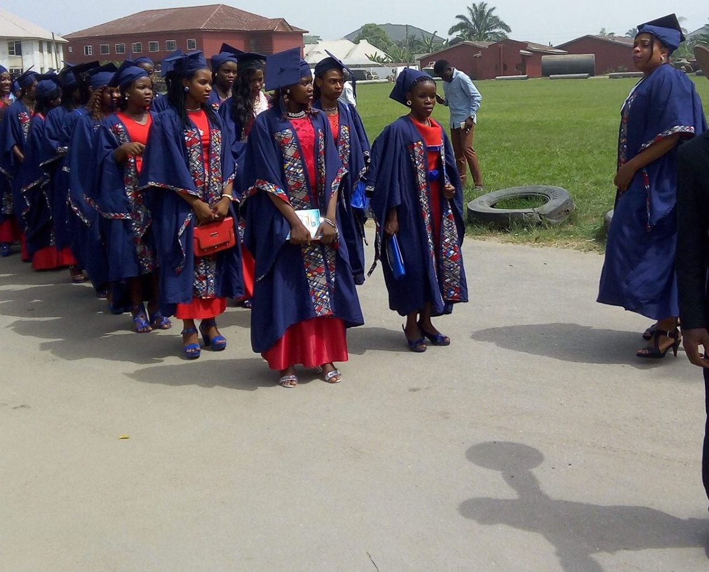

Over the past 30 years, our Secondary School has undergone continuous growth to become known today as the Home of Champions, catering for learners from JSS1 (Grade 7) to SS3 (Grade 12) .

During the past decade, Our Early Learning Center has evolved to become a hub for imbibing relevant founational skills in children from Pre-school up to Primary 6 (Grade 6).

The School of Preaching prepares young men and women for the great commission God has for us⏤"Go into the world and preach the gospel..."

Constantly raising the bar for success, plans are currently underway to establish our Center for Advanced Education⏤Alpha University.